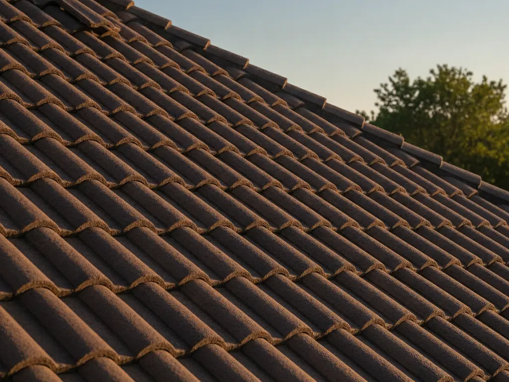
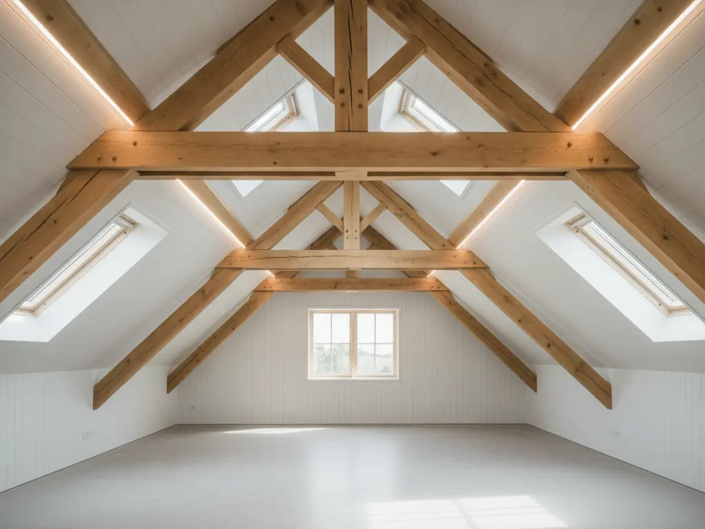
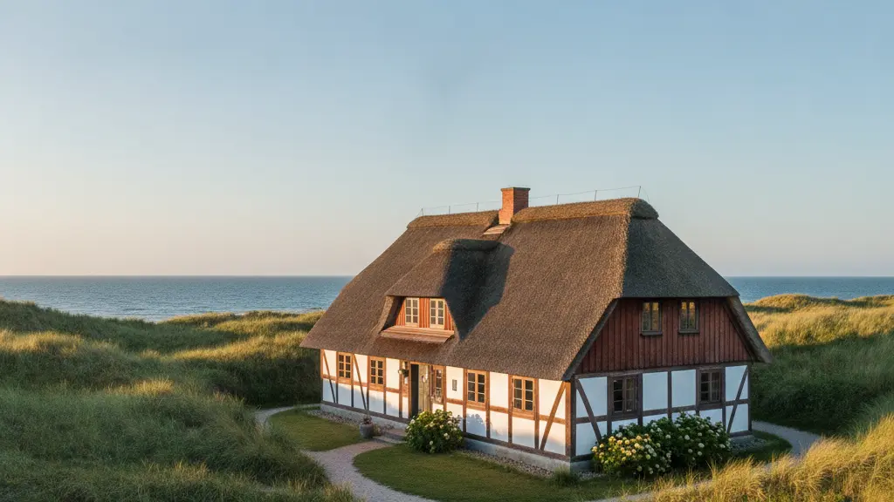
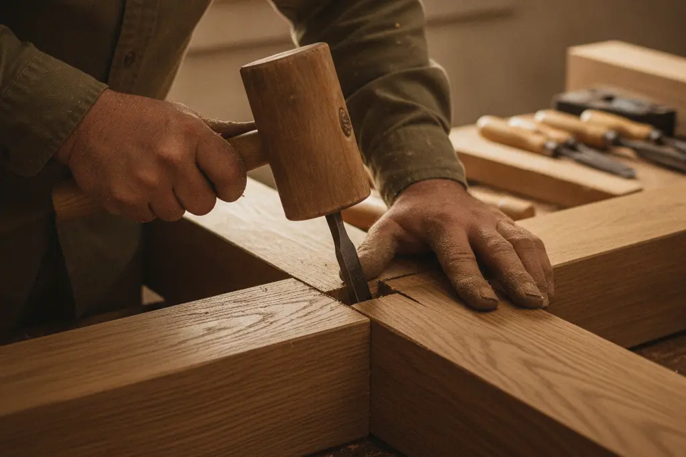
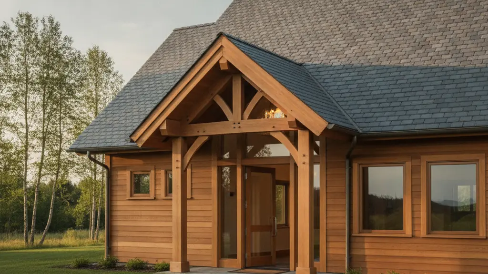

Unsere Leistungen im Detail
Professionelle Dachdecker- und Zimmererarbeiten für private und gewerbliche Kunden in Husum und Umgebung.

Professionelle Dachdecker- und Zimmererarbeiten für private und gewerbliche Kunden in Husum und Umgebung.
Die Deichblick Dachdecker GmbH bietet Ihnen ein umfassendes Leistungsportfolio rund um Ihr Dach und den Holzbau. Wir verbinden traditionelle Handwerkskunst mit modernsten Materialien und energetischen Konzepten.
Egal ob es sich um eine kleine Reparatur nach einem Sturm, eine energetische Dachsanierung zur Senkung Ihrer Heizkosten oder den kompletten Neubau eines Dachstuhls handelt – wir sind Ihr zuverlässiger Ansprechpartner. Wir legen großen Wert auf eine ausführliche Beratung im Vorfeld, um die für Sie wirtschaftlichste und langlebigste Lösung zu finden.
Wir realisieren hochwertige Eindeckungen für Steildächer aller Art. Dabei verwenden wir klassische Tonziegel, robuste Betondachsteine oder elegante Schieferplatten, ganz nach Ihrem persönlichen Geschmack und dem architektonischen Stil Ihres Hauses. Neben der Optik achten wir besonders auf eine fachgerechte Hinterlüftung und den optimalen Schutz vor Feuchtigkeit.
Auch im Bereich des Flachdachs sind wir Ihr Spezialist. Flachdächer erfordern aufgrund ihrer geringen Neigung eine absolut lückenlose und hochbeständige Abdichtung. Wir nutzen modernste Bitumenbahnen oder hochwertige Kunststoffbahnen (EPDM), um Garagen, Gewerbehallen oder Wohngebäude dauerhaft wasserdicht zu versiegeln.


Holz ist ein natürlicher, extrem stabiler und vielseitiger Baustoff. Als erfahrener Betrieb im Zimmererhandwerk errichten wir maßgeschneiderte Dachstühle für Ein- und Mehrfamilienhäuser. Wir planen die Konstruktion präzise, richten das Holz fachgerecht auf und sorgen für eine perfekte Statik, die auch schweren Dachlasten und starken Winden problemlos standhält.
Neben Dachstühlen fertigen wir auch individuelle Holzkonstruktionen im Außenbereich. Dazu gehören langlebige Carports, die Ihr Fahrzeug vor der salzigen Küstenluft schützen, gemütliche Terrassenüberdachungen oder stabile Holzfassaden.
Ein in die Jahre gekommenes Dach verliert nicht nur an Attraktivität, sondern oft auch an Schutzwirkung und Dämmleistung. Über ein ungedämmtes Dach entweicht ein erheblicher Teil der teuren Heizenergie. Mit einer professionellen Dachsanierung der Deichblick Dachdecker GmbH bringen Sie Ihr Gebäude energetisch auf den neuesten Stand und sparen bares Geld.
Wir entfernen alte Eindeckungen fachgerecht, prüfen die darunterliegende Holzkonstruktion auf Schäden und erneuern die Dämmung (z. B. als Aufsparren- oder Zwischensparrendämmung). Anschließend decken wir Ihr Dach neu ein.


Kleine Ursache, große Wirkung: Ein einzelner verschobener Ziegel oder eine verstopfte Dachrinne können ausreichen, um unbemerkt Wasser ins Haus dringen zu lassen. Die Folge sind oft teure Feuchtigkeitsschäden an der Holzkonstruktion oder im Wohnbereich. Mit unserem regelmäßigen Wartungsservice beugen Sie solchen Schäden effektiv vor.
Sollte es dennoch zu einem Schaden kommen – beispielsweise nach einem schweren Herbststurm an der Küste – lassen wir Sie nicht im Regen stehen. Unser Team ist schnellstmöglich vor Ort, um lose Ziegel zu sichern, Notabdichtungen vorzunehmen und den Schaden für die Versicherung lückenlos zu dokumentieren.
Die Bauklempnerei ist die perfekte Ergänzung zu unseren Dachdeckerarbeiten. Wir fertigen und montieren alle Bauteile, die für eine sichere Ableitung von Regenwasser notwendig sind. Dazu gehören Dachrinnen, Fallrohre, Kehlen und Einlaufbleche. Wir arbeiten mit hochwertigen Metallen wie Zink, Kupfer, Aluminium und Edelstahl.
Darüber hinaus realisieren wir auch komplette Metalleindeckungen und anspruchsvolle Fassadenbekleidungen in Stehfalztechnik. Diese Systeme sind extrem langlebig, absolut wartungsfrei und verleihen modernen Gebäuden eine besonders edle, zeitlose Optik.

Als stolzer Handwerksbetrieb machen wir bei der Qualität keine Kompromisse. Wir wissen, dass ein Dach jahrzehntelang extremen Belastungen standhalten muss.
Deshalb setzen wir ausschließlich auf qualifizierte Fachkräfte, die ihr Handwerk von der Pike auf gelernt haben und sich regelmäßig weiterbilden. Ebenso wichtig ist uns die Auswahl der richtigen Materialien. Wir verbauen nur Produkte, von deren Langlebigkeit und Sicherheit wir selbst absolut überzeugt sind.
Gerne erstellen wir Ihnen ein unverbindliches Angebot für Ihr Vorhaben. Rufen Sie uns an oder schreiben Sie uns.
Schnelle, persönliche Antworten zu Leistungen, Terminen & Angeboten.